데이터 과학
학습 목표
- 작은 다수 그림(Small Multple)은 격자그림(trellis, lattice, grid, panel chart)로 동일한 척도와 축을 사용하여 쉽게 비교가 될 수 있도록 했다.
- 정적 격자그림에 더하여 자바스크립트로 인터랙티브 기능을 추가한
trelliscopejs도 있다.
0. 2017년 19대 대통령 선거 시구군 득표율 및 사회경제지표
제19대 대통령선거 투표구별 개표자료를 다운받거나 오마이뉴스 GitHub 사이트에 공개된 2017년 19대 대통령 선거 시구군 득표율 사회경제지표 분석 파일을 다운로드 한다.
2017년 19대 대통령 선거 시구군 득표율 정보 외에 주요 사회경제지표로 다음이 포함되어 있다.
- “17년 유권자평균연령” : 시구군별 유권자의 연령을 추정
- “유권자평균교육연수” : 시구군별 유권자의 교육정도를 추정
- “17년제곱미터당가격” : 시구군별 유권자가 보유한 재력을 추정
- “평균 보험료” : 시구군별 유권자의 소득을 추정
1. 환경설정 및 데이터 불러오기
lattice 팩키지를 사용하지만 trellis 전통을 이어 받았기 때문에 명칭에 대해 혼란스러워 할 것은 없다. lattice 그래픽 시스템을 사용하여 한글사용(fontfamily = 'NanumGothic'), 기호에 사용될 색상 등을 설정하고, trellis.par.set() 명령어를 실행하면 적용된다.
lattice 시각화에 사용할 데이터는 정리가 잘 되어 있어 tidyverse 팩키지 read_csv 함수를 사용하여 불러와서 후보에 대한 요인형 자료형 설정만 하면 충분하다.
# 0. 환경설정 ----------------------------------------------------------
# library(tidyverse)
# library(readxl)
# library(rgdal)
# library(lattice)
# library(latticeExtra)
# library(extrafont)
# library(directlabels)
# loadfonts()
# par(family = 'NanumGothic')
## 0.1. 각 정당별 색상
party_col <- c("#065ce8", "#ff0000","#07f91f","#00faff","#f2ee09")
## 0.2. lattice 환경설정 ---------------------------------------------
wz_setting <- trellis.par.get()
wz_setting$fontsize <- list(text= 8, points = 4)
wz_setting$grid.pars <- list(fontfamily = 'NanumGothic')
wz_setting$superpose.symbol <- list(col = party_col)
trellis.par.set(wz_setting)
# 1. 데이터 가져오기 ----------------------------------------------------------
# 1.1. 오마이뉴스 대선 데이터 가져오기 ----------------------------------------------------------
# https://github.com/OhmyNews/2017-Election
oh_dat <- read_csv("https://raw.githubusercontent.com/OhmyNews/2017-Election/master/170509_Elec_Data-utf8.csv")
oh_dat <- oh_dat %>%
mutate(후보명 = factor(후보명, levels=c("문재인", "홍준표", "안철수", "유승민", "심상정")))2. 전체적인 흐름 1
데이터가 준비되었으면 각 변수들 간의 관계을 한 눈에 살펴보는 것이 필요하다. 각 그래픽 시스템마다 기본함수로 지원되고 있고 lattice 팩키지의 경우 splom() 함수가 변수간 산점도 도식화를 지원한다.
pairs(): Base 시각화 시스템splom(): lattice 시각화 시스템plotmatrix(): ggplot 시각화 시스템
2.1. splom 변수간 연관성 시각화
# 2. 전체적인 흐름 ----------------------------------------------------------
## 2.1. 연속형 ---------------------------
splom(~oh_dat[9:14])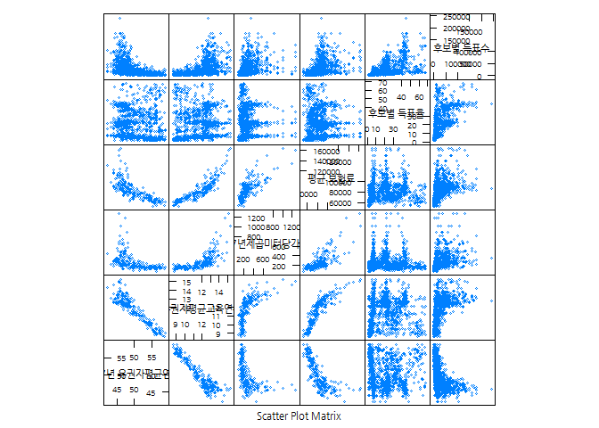
2.2. 후보별 득표율 분석
가장 먼저 대선 후보별 시구군별 득표율을 시각화한다.
## 2.2. 득표율 분포 ---------------------------
### 2.2.1. 후보별 득표율 분리 ---------------------------
vote_pcnt_plt <- densityplot(~ `후보별 득표율`|`후보명`, data = oh_dat,
as.table = TRUE,
groups = `후보명`,
plot.points = "jitter",
layout = c(1, 5),
strip = FALSE,
scales = list(relation = "free"))
direct.label(vote_pcnt_plt)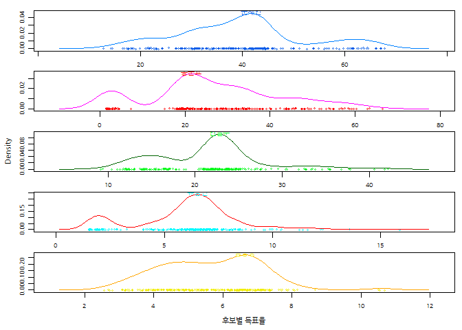
### 2.2.2. 후보별 득표율 모아보기 ---------------------------
votes_pcnt_one_plt <- densityplot(~ `후보별 득표율`, data = oh_dat,
as.table = TRUE,
groups = `후보명`,
ref = TRUE,
plot.points = "jitter",
layout = c(1, 1),
strip = FALSE,
scales = list(relation = "same"))
direct.label(votes_pcnt_one_plt)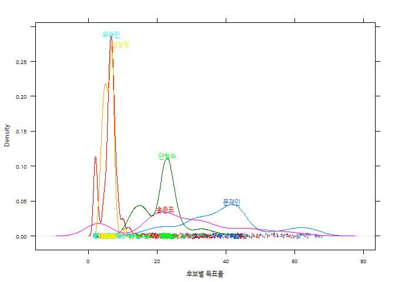
2.2. 후보별 득표율 분석
후보별 득표율에 이어 각 대선후보가 실제 득표한 시구군별 득표수는 다음과 같다.
## 2.3. 득표수 분포 ---------------------------
### 2.3.1. 후보별 득표수 분리 ---------------------------
votes_plt <- densityplot(~ `후보별 득표수`|`후보명`, data = oh_dat,
groups = `후보명`,
auto.key=TRUE,
plot.points = "jitter",
layout = c(1, 5),
strip = FALSE,
col.line = party_col,
scales = list(relation = "same",
x = list(log = 10)))
direct.label(votes_plt)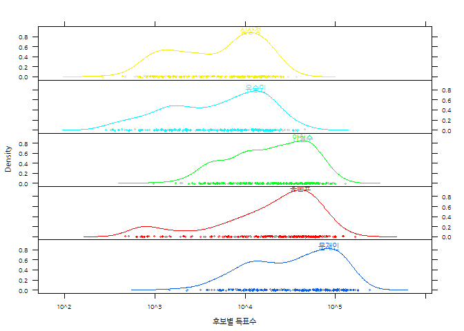
### 2.3.2. 후보별 득표수 모아보기 ---------------------------
votes_one_plt <- densityplot(~ `후보별 득표수`, data = oh_dat,
as.table = TRUE,
groups = `후보명`,
ref = TRUE,
plot.points = "jitter",
layout = c(1, 1),
strip = FALSE,
col.line = party_col,
scales = list(relation = "same",
x = list(log = 10)))
direct.label(votes_one_plt)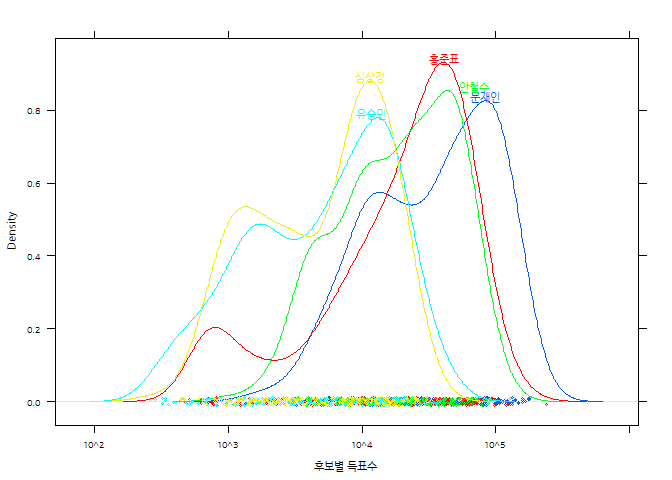
2.4. 시도 지역별 후보 득표율과 득표수
시도를 기준으로 각 후보가 득표한 득표율과 득표수는 다음과 같다.
## 2.4. 지역별 ---------------------------
densityplot(~ `후보별 득표율`|`시도`, data = oh_dat,
as.table = TRUE,
groups = `후보명`,
# auto.key = list(columns = 5, title="후보"),
plot.points = "jitter",
strip = TRUE,
scales = list(relation = "free"),
col.line = party_col,
par.settings = list(superpose.symbol = list(pch = 1, cex = 1.0,
col = party_col)))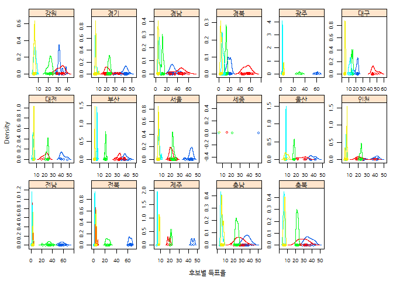
densityplot(~ `후보별 득표수`|`시도`, data = oh_dat,
as.table = TRUE,
groups = `후보명`,
# auto.key = list(columns = 5, title="후보"),
plot.points = "jitter",
strip = TRUE,
scales = list(relation = "same",
x = list(log = 10)),
col.line = party_col,
par.settings = list(superpose.symbol = list(pch = 1, cex = 1.0,
col = party_col)))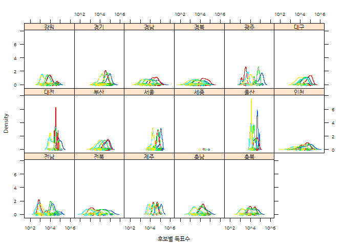
2.5. 시도 지역별 후보 득표율과 득표수
시구군별 유권자가 보유한 재력을 추정하는 “17년제곱미터당가격”, 시구군별 유권자의 소득을 추정하는 “평균 보험료”를 바탕으로 각 후보별 득표율과 득표수를 살펴보는 것은 의미가 있다.
## 2.5. 자산, 소득과 득표 ---------------------------
### 2.5.1. 자산, 소득과 득표율
xyplot(`후보별 득표율`~ `17년제곱미터당가격`|`후보명`, data = oh_dat,
as.table = TRUE,
groups = `후보명`,
panel = function(x, y, ...) {
panel.smoothScatter(x, y, ...)
panel.loess(x, y, col="red")
})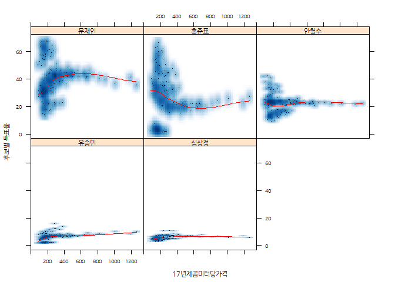
xyplot(`후보별 득표율`~ `평균 보험료`|`후보명`, data = oh_dat,
as.table = TRUE,
groups = `후보명`,
panel = function(x, y, ...) {
panel.smoothScatter(x, y, ...)
panel.loess(x, y, col="red")
})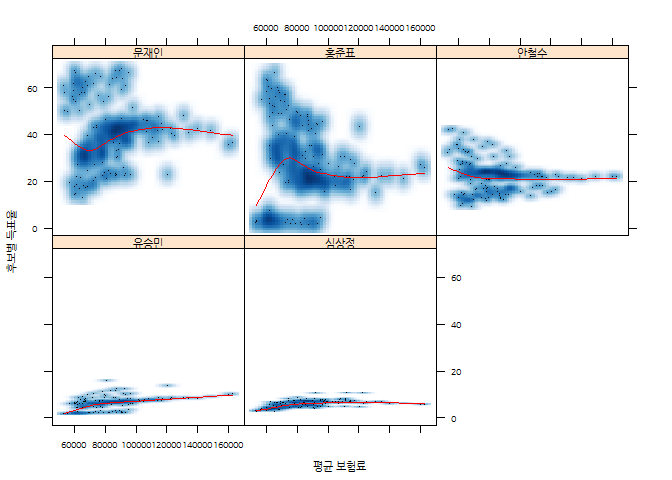
### 2.5.2. 자산, 소득과 득표수
xyplot(`후보별 득표수`~ `17년제곱미터당가격`|`후보명`, data = oh_dat,
as.table = TRUE,
groups = `후보명`,
panel = function(x, y, ...) {
panel.smoothScatter(x, y, ...)
panel.loess(x, y, col="red")
})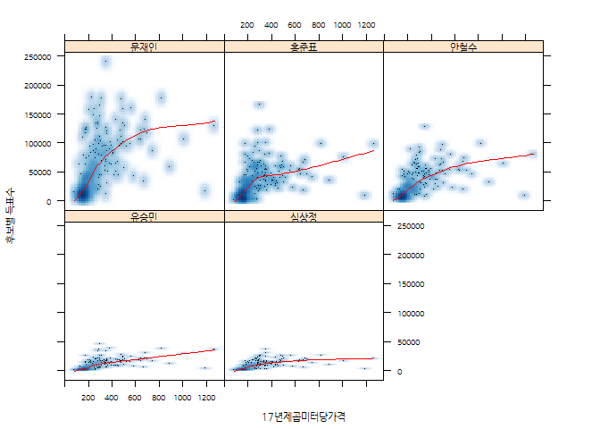
xyplot(`후보별 득표수`~ `평균 보험료`|`후보명`, data = oh_dat,
as.table = TRUE,
groups = `후보명`,
panel = function(x, y, ...) {
panel.smoothScatter(x, y, ...)
panel.loess(x, y, col="red")
})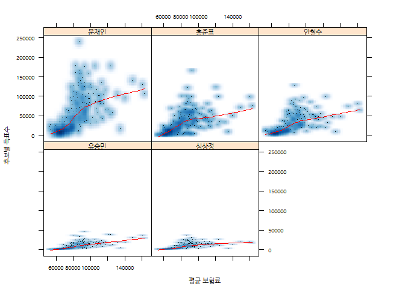
2.6. 연령별 후보 득표율과 득표수
제19대 대통령선거는 연령대별로 대선후보에 대한 호불호가 확연히 나타난 선거로 기억된다. 시구군별 연령을 기준으로 대선 후보별 득표율과 득표수 관계를 도식화해보는 것도 의미가 있다.
## 2.6. 연령 득표율/수 ---------------------------
xyplot(`후보별 득표율`~ `17년 유권자평균연령`|`후보명`, data = oh_dat,
as.table = TRUE,
groups = `후보명`,
panel = function(x, y, ...) {
panel.smoothScatter(x, y, ...)
panel.loess(x, y, col="red")
})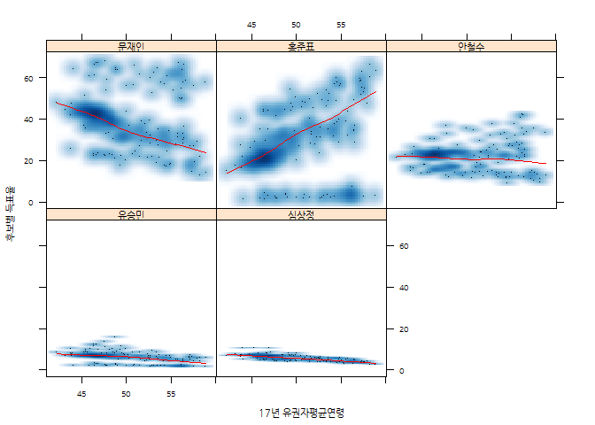
xyplot(`후보별 득표수`~ `17년 유권자평균연령`|`후보명`, data = oh_dat,
as.table = TRUE,
groups = `후보명`,
panel = function(x, y, ...) {
panel.smoothScatter(x, y, ...)
panel.loess(x, y, col="red")
})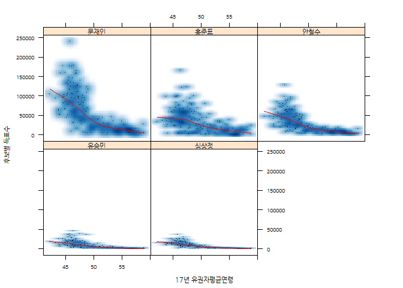
3. 상자그림을 통한 후보 유사성
시구군별로 후보별 득표수를 시각화하면 문재인, 안철수가 한 그룹, 홍준표, 유승민이 한 그룹으로 묶인 것이 확인된다.
## 3. 상자그림 ---------------------------
oh_dat <- oh_dat %>% ungroup() %>%
group_by(hubo=후보명) %>%
mutate(시도정렬 = reorder(`시도`, `후보별 득표수`, median, na.rm = TRUE))
bwplot( `시도정렬` ~ `후보별 득표수` | 후보명, data = oh_dat,
as.table = TRUE,
group = 후보명,
outer=TRUE,
scales = list(relation = "free"))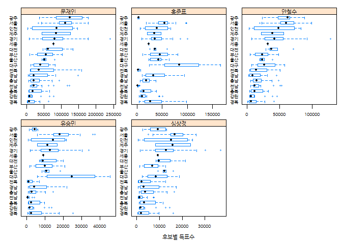
4. 누적 분포 그래프를 통한 후보가 표차이 시각화
누적분포 그래프는 각 후보간 득표수 차이를 시각적으로 확연히 보여준다.
## 4. 누적 분포 그래프 ---------------------------
oh_dat <- oh_dat %>% ungroup() %>%
mutate(시도명 = forcats::fct_recode(시도,
"대전" = "세종"))
ecdfplot( ~ `후보별 득표수` | 시도명 , data = oh_dat,
group = 후보명,
ref = TRUE)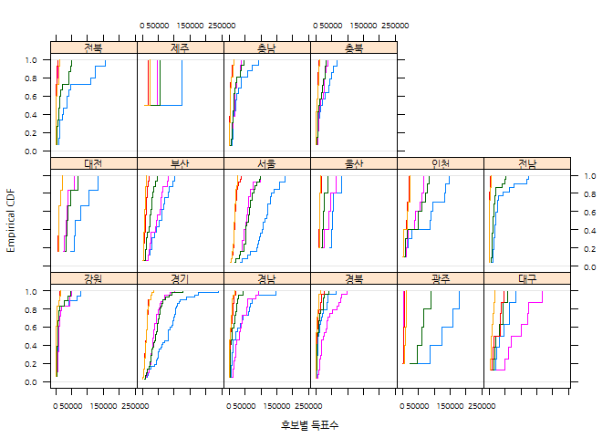